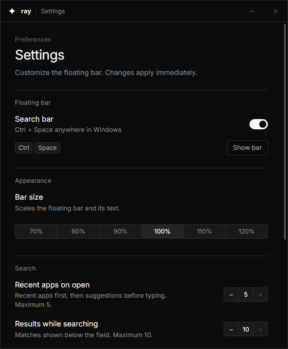

Instant by default
The index is ready before you finish pressing the shortcut. Refreshes happen only while the bar is hidden.
ray · 0.1.0 · windows launcher
Ray is a floating search bar for Windows. Press Ctrl + Space, type a few letters, and the app you want is already open. No dock, no desktop clutter, no window to manage.
Ray shows up for one job and gets out of the way. Nothing to manage, nothing to close.
The index is ready before you finish pressing the shortcut. Refreshes happen only while the bar is hidden.
Arrows, Enter, Esc and Ctrl + Enter. Selection never sticks after launch.
Scale from 70% to 120%, recent count, result count, launch at login.
A tray app with no main window. Hides on Esc or a click outside.
Start menu and Store apps, indexed with their native icons.
Typing is coalesced to one render per frame. The window resizes only when it needs to.
Ray opens on top of everything, takes your query, and hides the moment you are done.
Press Ctrl + Space anywhere in Windows. The bar appears centered, above every window.
Recent apps show before you type. A few letters narrow the list to the one you want.
Enter launches. The bar resets, so the next search starts clean.
Drive it from the keyboard. The pointer stays visible, but you rarely need it.
Show or hide Ray
Move selection
Open the selected app
Reveal the app shortcut in Explorer
Hide the bar, or close settings
Open settings from the gear in the bar or the tray menu. Changes apply immediately.

Get Ray for Windows. Free and open source. Unsigned build, so Windows SmartScreen may ask for confirmation.